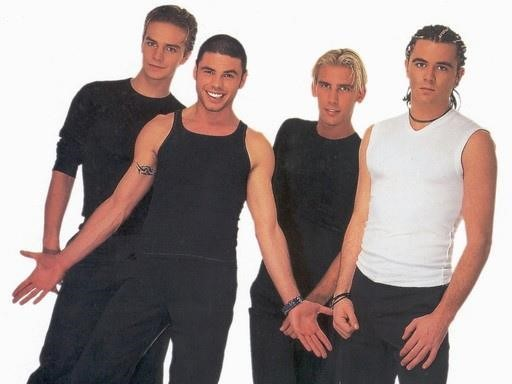
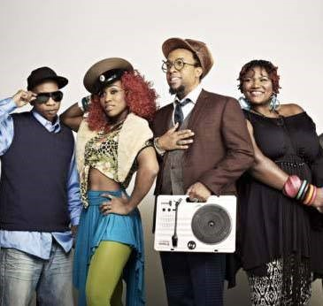
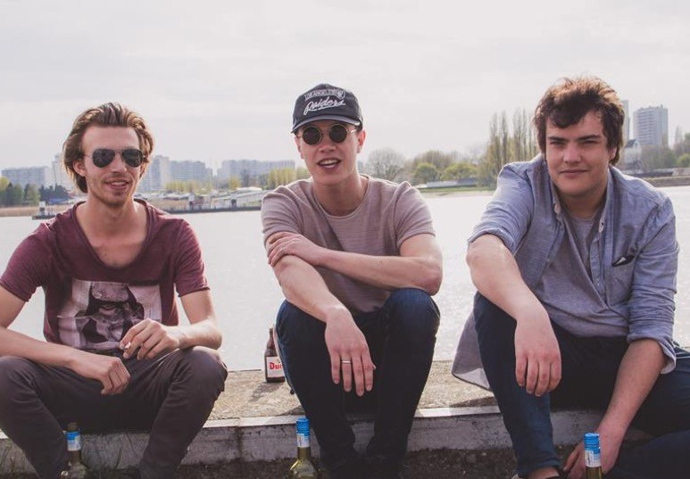

4-of-us
Het begon ooit allemaal met vier vrienden uit Nederland en hun passie voor muziek. Die passie werd hun leven. Deze vier vrienden kennen wij als de 4 of us! Zo veroverde ze heel Europa met hun Eurodance hits zoals Jump, Colors of the rainbow en natuurlijk de hit die wij allenmaal kennen: Summer vibes! Op deze label night brengt 4 of us ons allenmaal weer terug naar de Eurodance periode van toen.
MissLeader
MissLeader is de alter ego van Alicia Hernandez Peeters. Met haar Colombiaanse en Belgische roots geloofd MissLeader in girlpower en straalt het dan ook uit. Ze werkt niet graag met anderen want ze heeft graag de leiding maar dit bracht haar tot de succesvolle artiest die zij vandaag de dag is.
Robic beats
Robic beats is een Belgische groep die stevige Eurodance muziek maakt en hun liefde hiervoor met iedereen wil delen. Ze maken dansbare platen met een goed ritme voor op festivals maar ook om op te sporten (denk bijvoorbeeld aan een aerobic, Zumba en fitness). Ze hebben ondertussen 4 albums gemaakt die bekend zijn over de hele wereld.
Sunseekers
Deze drie muzikale vrienden uit Antwerpen maakten in de zomer van 2015 een reis per boot over de Atlantische oceaan en bezochten verschillende Europese landen aan de kustlijn. In Scandinavië hoorden ze opnieuw Eurodance uit de jaren 80 en 90. Door de inspirerende zomer zijn ze begonnen om nummers te gaan schrijven en hebben ze Eurodance in een nieuw jasje gestoken. Ze hebben even op hun laten wachten maar presenteren juni as. hun vier albums met eigentijdse Eurodance, en laten ze tijdens de label night hun beste hits horen.